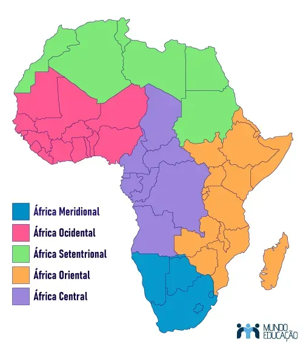
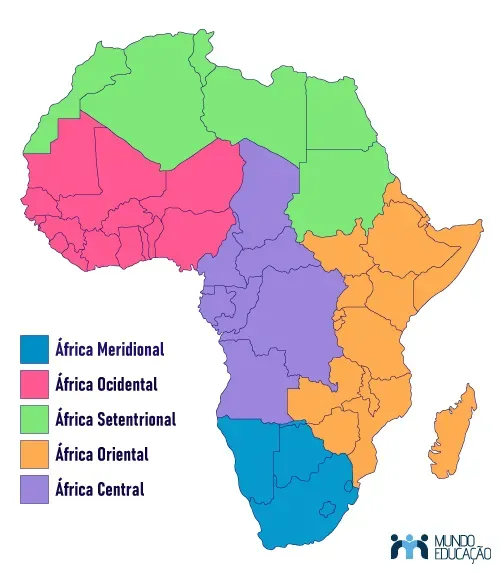
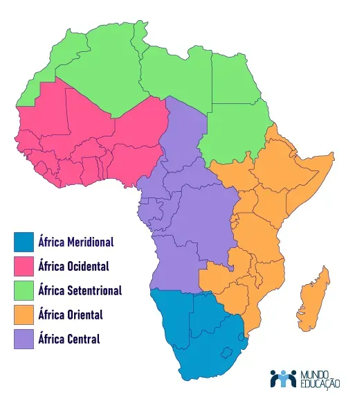

O continente africano, marcado por sua riqueza cultural e diversidade geográfica, destaca-se também por um notável crescimento populacional nas últimas décadas. Essa característica impacta não apenas a demografia, mas também desempenha um papel significativo nos desafios e oportunidades enfrentados pela África contemporânea.
Geografia e Ecossistemas Únicos: A África abriga uma gama extraordinária de ecossistemas, desde as vastas savanas até densas florestas tropicais, desertos expansivos e cadeias de montanhas imponentes. Essa diversidade geográfica influencia não apenas o crescimento populacional, mas também a distribuição de comunidades em ambientes diversos.
Crescimento Demográfico Acentuado: A África experimenta um crescimento populacional significativo, sendo o continente com uma das maiores taxas de crescimento do mundo. Este fenômeno é resultado de diversos fatores, incluindo altas taxas de fertilidade, melhorias na saúde pública e redução da mortalidade infantil.
Juventude Demográfica: Um traço marcante da demografia africana é a predominância de uma população jovem. Com uma grande proporção de jovens, a África enfrenta desafios e oportunidades relacionados à educação, emprego e integração social dessa juventude em crescimento.
Desafios e Oportunidades Econômicas: O rápido crescimento populacional traz consigo desafios econômicos, como a necessidade de criar empregos suficientes para a população em expansão. No entanto, essa dinâmica demográfica também representa uma oportunidade única para impulsionar o desenvolvimento econômico, especialmente se for acompanhada de investimentos em educação e infraestrutura.
Investimentos em Saúde e Bem-Estar: O crescimento populacional destaca a importância de investimentos contínuos em saúde e bem-estar. A promoção de cuidados maternos, planejamento familiar e acesso a serviços de saúde é essencial para garantir um crescimento populacional saudável.

A África, vasta em suas paisagens e diversidade cultural, emerge como um epicentro de oportunidades econômicas. Seus recursos naturais, que variam desde minerais preciosos até terras férteis, têm impulsionado setores-chave, como mineração, agricultura e energia. No entanto, essa narrativa econômica é intrinsecamente ligada ao dinâmico crescimento populacional que o continente testemunha. O potencial demográfico africano, refletido em uma população jovem e em crescimento, apresenta uma força propulsora para o desenvolvimento econômico. Uma força de trabalho dinâmica e crescente pode catalisar a produção, a inovação e o empreendedorismo, abrindo novos horizontes para o progresso econômico. Entretanto, esse cenário não está isento de desafios. O aumento demográfico demanda investimentos substanciais em infraestrutura, educação, saúde e empregos. A gestão cuidadosa dessas necessidades torna-se imperativa para evitar pressões econômicas e sociais desproporcionais. A diversificação econômica é essencial para sustentar o crescimento populacional e garantir uma resiliência econômica robusta. Setores emergentes, impulsionados por inovações tecnológicas e empreendedorismo, contribuem para uma economia mais dinâmica e inclusiva. A urbanização, um fenômeno inevitável com o crescimento populacional, traz consigo oportunidades e desafios. O desenvolvimento urbano eficaz, aliado à mobilidade e à infraestrutura moderna, é crucial para enfrentar os complexos desafios urbanos e promover ambientes urbanos sustentáveis. A promoção do planejamento familiar e o acesso a serviços relacionados emergem como estratégias chave. Um equilíbrio entre o desenvolvimento econômico e a gestão cuidadosa do crescimento demográfico é vital para assegurar um futuro sustentável. Assim, enquanto a África se destaca como uma promissora fronteira econômica, a harmonização entre crescimento populacional e desenvolvimento econômico torna-se o palco central. Uma abordagem holística e sustentável é essencial para desvendar o pleno potencial econômico do continente e forjar um caminho resiliente para o futuro.
O continente está forjando um caminho inspirador para o amanhã. Uma história de resiliência e promessa, onde cada amanhecer é uma nova oportunidade de brilhar.